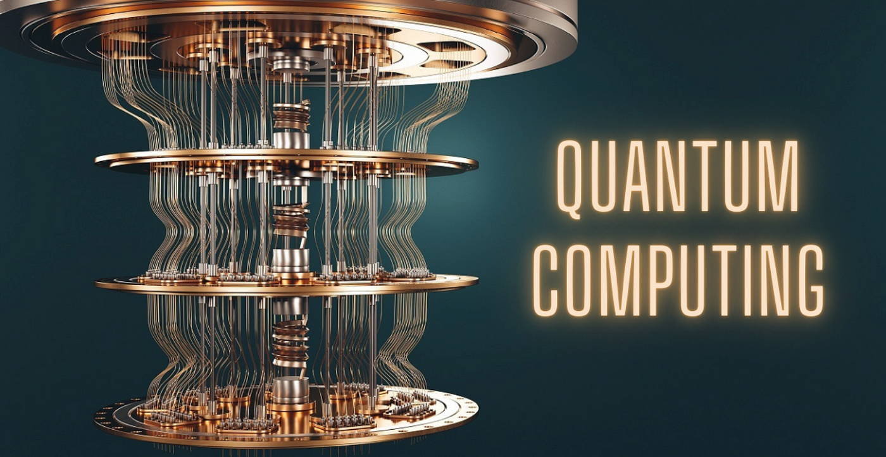

The Rise of Quantum Computing: A New Era of Processing Power
By Alice Brown
Published on October 5, 2024
Introduction
Quantum computing represents a paradigm shift in processing power, promising to solve complex problems that are beyond the reach of classical computers.
How Quantum Computers Work
Unlike classical computers that use bits, quantum computers use qubits, which can exist in multiple states simultaneously thanks to the principles of superposition and entanglement.
Potential Applications
- Cryptography: Breaking and creating more secure encryption
- Drug Discovery: Simulating molecular interactions
- Financial Modeling: Optimizing investment portfolios
- Climate Modeling: More accurate weather and climate predictions
Challenges and Limitations
- Maintaining quantum coherence
- Error correction in quantum systems
- Scaling up quantum computers
- Developing quantum algorithms
Conclusion
While still in its early stages, quantum computing has the potential to revolutionize numerous fields. As research progresses, we can expect to see groundbreaking applications that will shape the future of technology and scientific discovery.
For more information on quantum computing, visit Example Quantum Computing Report.